Snow reports
Daily snow reports for skiers: where the snow is, what is coming and where to ski, from the SnowScope snow map and measuring stations. Every number comes from that day's data.

Snow in Bavaria and the Black Forest on 17 November: snow depth on the upper slopes, fresh snow, the next three days and the pick for a short trip.

Snow in Austria on 17 November: snow depth on the upper slopes, fresh snow, the next three days and the pick for a short trip.
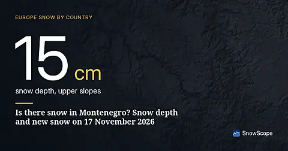
Montenegro snow today, 17 November: snow cover, new snow, snow depth by height, the next days and the best resorts.

Serbia snow today, 17 November: snow cover, new snow, snow depth by height, the next days and the best resorts.

Croatia snow today, 17 November: snow cover, new snow, snow depth by height, the next days and the best resorts.
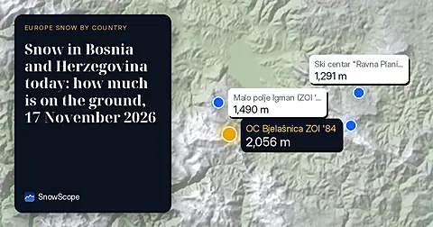
Bosnia and Herzegovina snow today, 17 November: snow cover, new snow, snow depth by height, the next days and the best resorts.

Albania snow today, 17 November: snow cover, new snow, snow depth by height, the next days and the best resorts.

North Macedonia snow today, 17 November: snow cover, new snow, snow depth by height, the next days and the best resorts.

Les Grands Montets saw 74 cm of new snow in the last 72 hours, with more forecast for the coming days, according to our model on November 17, 2026.

Austria is behind: Kühtai has 20 cm, a normal 17 November has 33 cm. Snow cover, new snow, resorts and the days ahead in Austria on 17 November.

Thaw in Bulgaria: 330 km² of snow cover gone in a day. Snow cover, new snow, resorts and the days ahead in Bulgaria on 17 November.

Finland or Sweden? Where the snow is better on 17 November. Snow cover, new snow, resorts and the days ahead in Finland on 17 November.

Snow is coming in France: up to 87 cm in the week ahead. Snow cover, new snow, resorts and the days ahead in France on 17 November.

Snow at the UK's favourite Alpine resorts on 17 November: snow depth on the upper slopes, fresh snow, the next three days and the pick for a short trip.

Rapid snow loss across Italy on 17 November as temperatures rise. Only 12,540 km² remains covered, down from 21,210 km² yesterday. The Aosta Valley saw 134 cm of new snow in 72 hours.

Norway's snow cover is growing fast. Up to 39 cm of new snow is forecast over the next seven days, with the heaviest fall on November 20.

Poland's snow-covered area shrank from 1,300 to 710 km² in a week. Karpacz holds the deepest snow at 36 cm as of 17 November.

Mild day in Romania: the snow retreats to 1,700 m. Snow cover, new snow, resorts and the days ahead in Romania on 17 November.

Slovakia's snow cover dropped to 1,830 km2 today. Snow sits mostly above 1,200 m; the High Tatras and Low Tatras lead with 8 cm of new snow in 72 hours.

79% of Sweden's ski areas show snow today. Upper slopes at Björkliden and Abisko carry 131 cm. The Hemavan fjells led the past 72 hours with 15 cm of fresh snow.
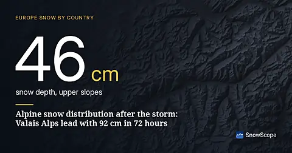
Fresh snow fell unevenly across Swiss mountains. The Valais Alps received 92 cm in three days; the Bernese Oberland 54 cm. Data from 17 November.

UK gained 8,380 km² of snow cover by 17 November. The North Pennines led with 27 cm in 72 hours.

Ukraine's snow cover dropped to 6% today as the Carpathians melt back. Poland holds twice the white share. Both countries face fresh snow by Friday.

Two-week snow outlook in Andorra: 13 cm and 21 cm. Snow cover, new snow, resorts and the days ahead in Andorra on 17 November.

Only 22 of 170 Czech ski areas show snow cover on 17 November. The Jeseníky and Krkonoše lead with 9 cm and 8 cm in 72 hours. More snow arrives from 20 November.

Slovenia has only 6 % white cover today against Austria's 34 %. Fresh snow in the Julian Alps offers the best chance for early season runs. Data from 17 November.

The snow is shrinking in Germany: 840 km² gone since last week. Snow cover, new snow, resorts and the days ahead in Germany on 17 November.

Kosovo snow today, 17 November: snow cover, new snow, snow depth by height, the next days and the best resorts.

Orelle holds 42 cm, close to the typical 53 cm for mid-November. Fresh snow forecast across the Alps over the next three days.

96 cm of new snow forecast for Les Arcs over the next three days, with today bringing the heaviest falls; model run November 16.

The two-week picture in the US West, 17 November to 30 November, drawn from the two global models that reach two weeks, ECMWF and GFS. Middle of the …

Whistler Blackcomb saw 76 cm of new snow in the last 72 hours, with Mount Cain Alpine Park also receiving 64 cm, as of November 16, 2026.

Albania forecasts 9 cm of snow rising to 22 cm over two weeks, based on our model from November 16.

On 16 November, Andorra has snow cover on just 2 % of its area while France climbs to 11 %; the gap reflects autumn patterns, with deeper falls forecast next week.

215 of 277 Austrian ski resorts have early-season snow on 16 November. The snow line sits at 1500 metres; expect 50 cm in the next week.

Thaw in Bosnia and Herzegovina: 600 km² of snow cover gone in a day

Bulgaria covers just 2% in white with 5 cm at Borovets on its first snow day, while Romania shows 10%, measured 2026-11-16

Mild conditions erased 950 km2 of snow across Croatia on 16 November. Only 880 km2 remains, mostly above 1,500 m. Next snow arrives 21 November.

Thaw has shrunk Czechia's snow cover from 1,250 km² to 720 km² in one day. Measured 16 November. Fresh snow arrives 17 November.

Finland gained 138,530 km² of snow cover in a week, reaching 157,360 km² as the season opened. Data from 16 November 2026.

France or Switzerland? Where the snow is better on 16 November. Snow cover, new snow, resorts and the days ahead in France on 16 November.

German Alps show just 43% of normal snow depth across tracked resorts on 16 November, well behind schedule as the season opens.

Greece snow today, 16 November: snow cover, new snow, snow depth by height, the next days and the best resorts.

Hungary snow today, 16 November: snow cover, new snow, snow depth by height, the next days and the best resorts.

Ireland snow today, 16 November: snow cover, new snow, snow depth by height, the next days and the best resorts.

Monterosa Ski holds 99 cm, 38% above normal for mid-November, as Italian Alps gain early snow on 16 November.

Kosovo's two-week snow outlook: 7 cm by November 23 and up to 18 cm from November 24-30, based on satellite data as of November 16.

Our model shows 11 cm in the next week and 22 cm Nov 24-30. Data from 16 Nov.
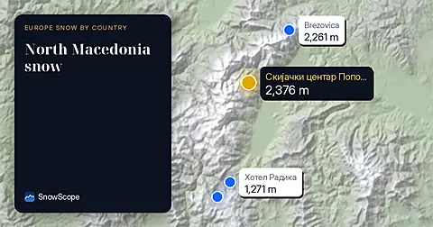
North Macedonia's mountains will see modest snow this week, then heavier falls next week. Data from 16 November.

Fresh snow from a three-day storm peaked at 76 cm in Jotunheimen and 74 cm in Hardangervidda, Norway's high ranges, on 16 November.

Rapid thaw removed nearly 44% of Poland's snow cover on 16 November. Only 1,170 km² remains white, with recovery expected from 17 November.

Portugal snow today, 16 November: snow cover, new snow, snow depth by height, the next days and the best resorts.

Snow coverage in Romania dropped from 12,900 km² to 6,630 km² in a week, but peaks above 1,500 m keep their white cover as of 16 November.

Despite 60 cm of fresh snow in 72 hours, Scandinavia's mid-November depths are well below average as of 16 November.

Riksgränsen dominates Scandinavia with 173 cm of snow depth measured on 16 November, holding far more mountain water than any rival resort in the region.

Three of Serbia's nine resorts hold measurable snow on 16 November. Avantura park tops the ranking with 28 cm depth at its station.

Slovakia's snow-covered area rose sharply to 2,020 km² in one week. Ski centrum Dedinky leads with 48 cm. Data from 16 November.
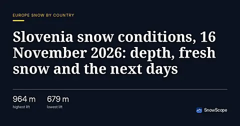
Early November snow covers 1,130 km2 of Slovenia. The ground turns white above 2,000 m elevation; below that, most slopes stay brown. Data from 16 November 2026.
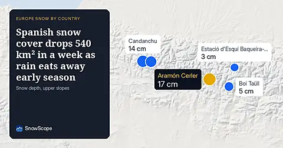
Spain's snow-covered area fell to 310 km² on 16 November. Only 6 of 31 resorts have skiable snow, led by Aramón Cerler at 17 cm.

Sweden's snow cover grew by 167,100 km² in one week. Abisko holds 129 cm as early-season water accumulates in high fells. Data from 16 November.
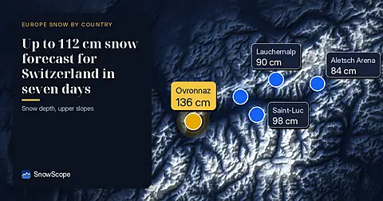
Snow model forecasts 112 cm in Switzerland by November 24, with 29 cm on November 17. Fresh water accumulates across the high Alps over the coming week.

Warm weather on 16 November removed 1290 km2 of UK snow cover. The snow line is now at 800 metres; fresh snow arrives tomorrow.

Ukraine's snow cover fell from 5,090 km² to 1,650 km² in a week. As of November 16, high terrain above 1,500 m held 89% cover. Up to 25 cm snow forecast in the next 7 days.

Sestriere snow forecast for 23–29 November 2026: 30 cm at the top (15–44 cm), 25 cm at the base, snowiest day Wednesday 25 November, with neighbours compared.

Madonna di Campiglio snow forecast for 23–29 November 2026: 27 cm at the top (8–46 cm), 23 cm at the base, snowiest day Wednesday 25 November, with neighbours compared.

Val Gardena snow forecast for 23–29 November 2026: 11 cm at the top (5–18 cm), 6 cm at the base, snowiest day Wednesday 25 November, with neighbours compared.

Next week's fresh snow in Cortina d'Ampezzo: 5–21 cm on the upper slopes and 0–1 cm at the base (23–29 November 2026), best day, best slopes and how sure the forecast is.

Livigno snow forecast for 23–29 November 2026: 19 cm at the top (6–31 cm), 16 cm at the base, snowiest day Wednesday 25 November, with neighbours compared.

Next week's fresh snow in Courmayeur: 8–44 cm on the upper slopes and 5–28 cm at the base (23–29 November 2026), best day, best slopes and how sure the forecast is.

Cervinia snow forecast for 23–29 November 2026: 23 cm at the top (6–41 cm), 19 cm at the base, snowiest day Thursday 26 November, with neighbours compared.

Saalbach snow forecast for 23–29 November 2026: 17 cm at the top (3–31 cm), 8 cm at the base, snowiest day Sunday 29 November, with neighbours compared.

Stubai Glacier snow forecast for 23–29 November 2026: 14 cm at the top (2–25 cm), 12 cm at the base, snowiest day Thursday 26 November, with neighbours compared.
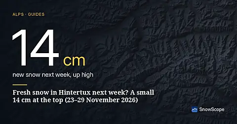
Hintertux snow forecast for 23–29 November 2026: 14 cm at the top (3–24 cm), 12 cm at the base, snowiest day Wednesday 25 November, with neighbours compared.

Mayrhofen snow forecast for 23–29 November 2026: 17 cm at the top (2–31 cm), 1 cm at the base, snowiest day Sunday 29 November, with neighbours compared.

Next week's fresh snow in Kitzbühel: 3–34 cm on the upper slopes and 2–14 cm at the base (23–29 November 2026), best day, best slopes and how sure the forecast is.

Next week's fresh snow in Obergurgl: 3–23 cm on the upper slopes and 2–20 cm at the base (23–29 November 2026), best day, best slopes and how sure the forecast is.

Sölden snow forecast for 23–29 November 2026: 13 cm at the top (2–24 cm), 8 cm at the base, snowiest day Thursday 26 November, with neighbours compared.

Next week's fresh snow in Lech-Zürs: 7–53 cm on the upper slopes and 6–48 cm at the base (23–29 November 2026), best day, best slopes and how sure the forecast is.

Ischgl snow forecast for 23–29 November 2026: 18 cm at the top (3–34 cm), 14 cm at the base, snowiest day Thursday 26 November, with neighbours compared.

St. Anton snow forecast for 23–29 November 2026: 25 cm at the top (5–45 cm), 18 cm at the base, snowiest day Sunday 29 November, with neighbours compared.

Next week's fresh snow in Andermatt: 3–38 cm on the upper slopes and 3–28 cm at the base (23–29 November 2026), best day, best slopes and how sure the forecast is.

Next week's fresh snow in Saas-Fee: 6–37 cm on the upper slopes and 5–30 cm at the base (23–29 November 2026), best day, best slopes and how sure the forecast is.

Engelberg snow forecast for 23–29 November 2026: 22 cm at the top (2–42 cm), 7 cm at the base, snowiest day Thursday 26 November, with neighbours compared.

Next week's fresh snow in Laax: 4–38 cm on the upper slopes and 1–10 cm at the base (23–29 November 2026), best day, best slopes and how sure the forecast is.

Next week's fresh snow in Davos: 4–27 cm on the upper slopes and 2–8 cm at the base (23–29 November 2026), best day, best slopes and how sure the forecast is.

St. Moritz snow forecast for 23–29 November 2026: 19 cm at the top (5–33 cm), 16 cm at the base, snowiest day Wednesday 25 November, with neighbours compared.

Verbier snow forecast for 23–29 November 2026: 24 cm at the top (5–42 cm), 9 cm at the base, snowiest day Thursday 26 November, with neighbours compared.

Next week's fresh snow in Zermatt: 7–39 cm on the upper slopes and 4–27 cm at the base (23–29 November 2026), best day, best slopes and how sure the forecast is.

Next week's fresh snow in Megève: 9–46 cm on the upper slopes and 1–2 cm at the base (23–29 November 2026), best day, best slopes and how sure the forecast is.

Next week's fresh snow in Flaine: 9–46 cm on the upper slopes and 8–45 cm at the base (23–29 November 2026), best day, best slopes and how sure the forecast is.

Avoriaz snow forecast for 23–29 November 2026: 29 cm at the top (9–48 cm), 17 cm at the base, snowiest day Wednesday 25 November, with neighbours compared.

Next week's fresh snow in Serre Chevalier: 25–68 cm on the upper slopes and 8–28 cm at the base (23–29 November 2026), best day, best slopes and how sure the forecast is.

Next week's fresh snow in La Grave: 23–74 cm on the upper slopes and 7–39 cm at the base (23–29 November 2026), best day, best slopes and how sure the forecast is.

Next week's fresh snow in Les 2 Alpes: 20–73 cm on the upper slopes and 4–22 cm at the base (23–29 November 2026), best day, best slopes and how sure the forecast is.

Alpe d'Huez snow forecast for 23–29 November 2026: 40 cm at the top (18–62 cm), 10 cm at the base, snowiest day Wednesday 25 November, with neighbours compared.

La Plagne snow forecast for 23–29 November 2026: 28 cm at the top (11–45 cm), 17 cm at the base, snowiest day Thursday 26 November, with neighbours compared.
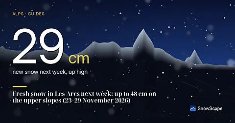
Les Arcs snow forecast for 23–29 November 2026: 29 cm at the top (11–48 cm), 12 cm at the base, snowiest day Thursday 26 November, with neighbours compared.

Méribel snow forecast for 23–29 November 2026: 28 cm at the top (13–44 cm), 19 cm at the base, snowiest day Wednesday 25 November, with neighbours compared.

Next week's fresh snow in Courchevel: 12–42 cm on the upper slopes and 4–30 cm at the base (23–29 November 2026), best day, best slopes and how sure the forecast is.

Next week's fresh snow in Val Thorens: 13–46 cm on the upper slopes and 11–39 cm at the base (23–29 November 2026), best day, best slopes and how sure the forecast is.

Next week's fresh snow in Tignes: 11–48 cm on the upper slopes and 8–38 cm at the base (23–29 November 2026), best day, best slopes and how sure the forecast is.

Val d'Isère snow forecast for 23–29 November 2026: 28 cm at the top (10–46 cm), 24 cm at the base, snowiest day Thursday 26 November, with neighbours compared.

Chamonix snow forecast for 23–29 November 2026: 27 cm at the top (8–46 cm), 14 cm at the base, snowiest day Wednesday 25 November, with neighbours compared.

Orelle reached 31 cm by 16 November, up 17 cm in one week. The Alps are forecast to get up to 103 cm more snow by 19 November.

Is there more snow than a year ago? We compared today with 15 November last winter at 4 resorts in Western Canada: 2 of them have more snow now, …

The early-winter snowpack in the Alps is building unevenly, and height makes all the difference. Today the deepest snow in the Alps is at La Grave …

Is there snow in the Atlas today? There is no snow on the Atlas ski slopes today. Snow is stored only on the highest summits: about 20 km² of ground, …

The snow has pulled back since 13 November, from 6,880 sq mi (17,820 km²) to 6,039 sq mi (15,640 km²) today; for 18 November our forecast gives …

2 of 4: that is how many resorts in the US Northeast are clearly above normal today. How does this winter look so far? We set today's snow at 4 …

Snow-covered area: 258,160 km² on 13 November, 253,880 km² today, 298,900 km² forecast for 18 November. The map is getting less white. Three inputs, …

Pyrenees snow report, 15 November. Mixed rain and snow: snow is expected only up high, about 7–19 cm near the top of Cauterets Cirque du Lys …

At Big White on 15 November, the upper slopes hold 68 cm near the summit while the base remains bare; an extreme vertical gradient typical of early season.

79 cm new snow forecast for Les Grands Montets from 16–18 November, mostly above 2000 m elevation, based on forecast from 15 November.

At Andermatt (2963 m) the forecast gives 75 mm of precipitation from 15 November to 20 November. During the wet hours the 0 °C level stands near 2160

Rain forecast as freezing level climbs to 4080 m; snow measured on 15 November is thin (under 20 cm) at all major Pyrenees resorts.
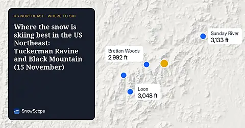
Picking a resort in the US Northeast comes down to three things: how deep the snow is, how fresh it is, and what is still to come. We weighed the …

Les Deux Alpes: how much fresh snow fell? 38 cm in 72 hours (15 November). Where did the most fresh snow fall in the Alps? La Grave got 41 cm of new …

Manning Park Resort has 22 percent of normal snow on 2026-11-15, with best historical snow arriving in weeks 12-14, still months away.

Courmayeur leads forecast with 88 cm in 72 hours; snow depth is at 142 percent of normal for mid-November as of November 15 data.
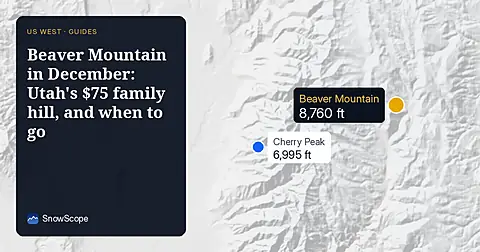
Beaver Mountain charges one $75 adult day price for 2026-27. Our snow history says early December is a coin flip there; the week before Christmas is far safer.